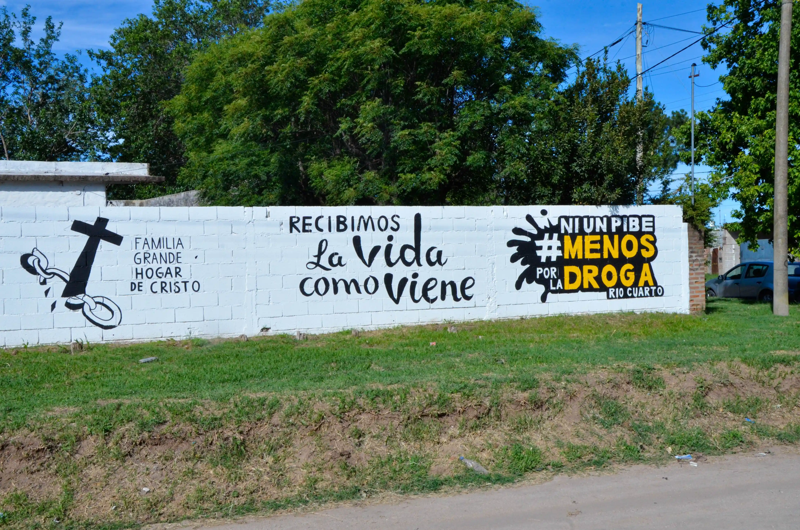
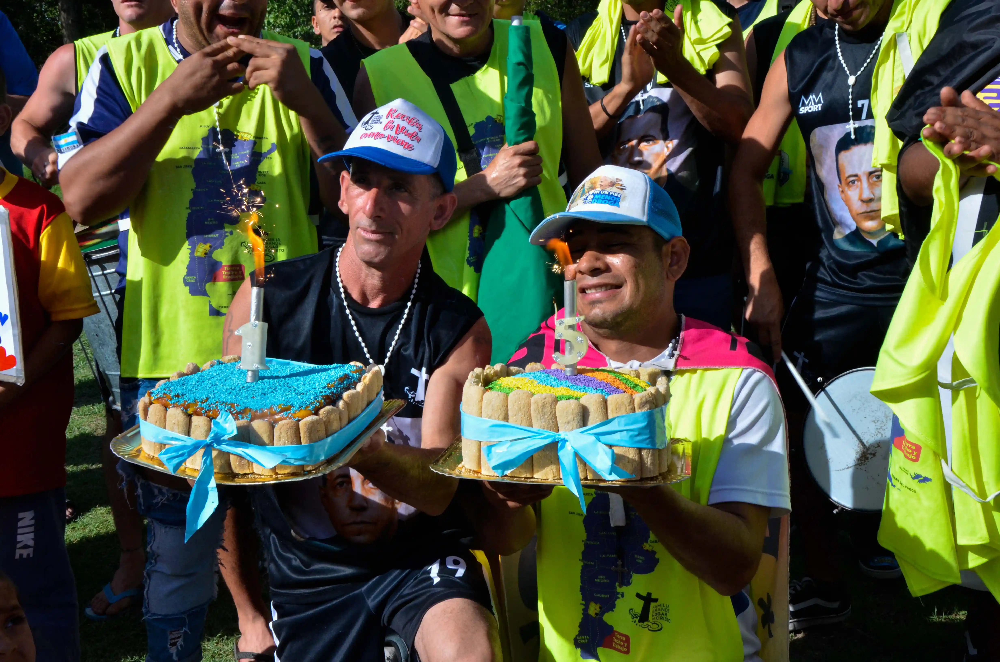

Hogar de cristo
Una obra eclesial a nivel nacional que se encarga del acompañamiento a personas en situación de consumo problemático, abordando y trabajando bajo el lema de: recibir la vida como viene.


Una obra eclesial a nivel nacional que se encarga del acompañamiento a personas en situación de consumo problemático, abordando y trabajando bajo el lema de: recibir la vida como viene.